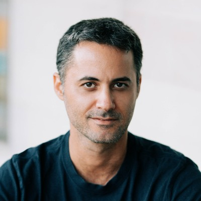

The infrastructure behind the tests
Shared libraries, authentication, environments and reporting that many product teams build on. A new product should plug in with a few lines, and a failing test should explain itself.

Open to QA and automation leadership rolesI'm Asa Halperin. For 17 years I've made software releases dependable, and for more than 8 of them I've led the QA and automation teams doing it. I build the infrastructure behind the tests: frameworks, pipelines, environments, reports, and AI inside the QA process.
Shared libraries, authentication, environments and reporting that many product teams build on. A new product should plug in with a few lines, and a failing test should explain itself.
Hiring, onboarding, mentoring and performance reviews for teams of four to six, in Israel and abroad.
At Candex I built Claude Code skills that run only the regression tests affected by each change, with a nightly full regression as the safety net, and used Atlassian Rovo to check automation coverage against requirements.
Test strategy, quality gates and clear readiness reporting, from requirements to production, for web, mobile and API.
My open-source project: one test platform for three products, in TypeScript and Playwright: Gitea, OWASP Juice Shop, and a padel court booking app I built to test against. Every pull request goes through the same six steps. Select a step to see what happens in it.
Completed runs on all branches, from GitHub Actions. Bar height is run duration.
Job durations, minutes and seconds
Test jobs run in parallel, and only after the image passed its security scan. I chose that trade deliberately: nothing runs on an image that was not scanned.
Image job before and after sharing the scanner database between steps. Measured on 12 November 2026.
52 seconds faster, a third of the jobEach scan step used to download the vulnerability database again. One shared volume fixed it.
Not every red test means the same thing. The first question is always which kind of failure it is. Switch the fault profile and see the last twelve nights of the same suite, run for real.
Every square is one real nightly run of my padel booking app's test suite. Amber means the test passed only on a retry. Click a red or amber square to see the error, or a green one to open that run on GitHub.
The padel suite, run against each fault profile by a nightly workflow that is kept out of the pull request checks. Live from GitHub Actions.
Select a period on the timeline to see the role.
The dark chips are the tools I work with most.
I'm looking for my next QA or automation leadership role in central Israel. I'd be glad to talk.